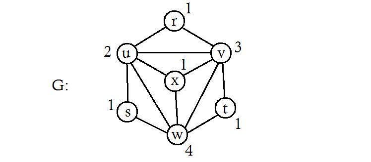
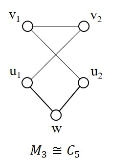
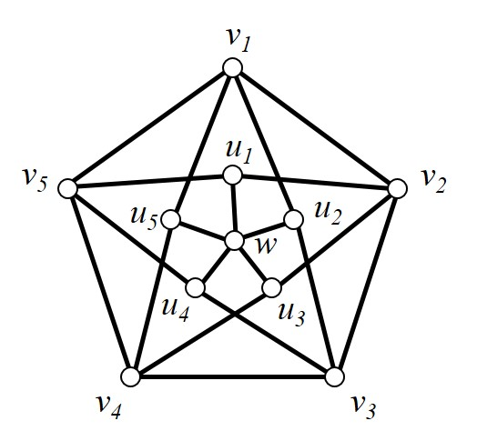
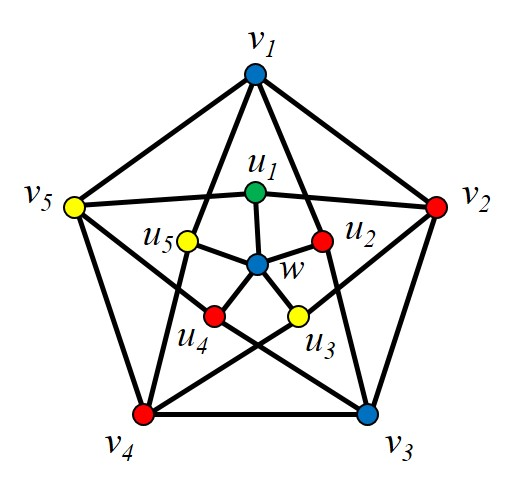

Section 3.2 Bounds on the chromatic number
¶A clique in a graph \(G\) is a maximal complete subgraph of \(G\text{.}\) The clique number \(\omega (G)\) of \(G\) is the order of a largest clique of \(G\text{.}\)

Example 3.2.2.
Determine all the cliques of \(G\) in Figure 3.2.1 and then deduce the \(\omega(G)\text{.}\)The cliques of \(G\) are:
Hence the clique number is \(\omega(G) = 4\text{.}\)
In any colouring of a graph \(G\text{,}\) all vertices in a clique must get different colours; hence the following result
Theorem 3.2.3.
For any graph \(G\text{,}\)However, this lower bound for \(\chi(G)\) is not a very good one. For example, odd cycles have \(\omega = 2\) and \(\chi = 3\text{.}\) In fact, we can construct, for any \(k = 3,4, \ldots\text{,}\) \(k\)-chromatic graphs that are triangle-free, so that \(\chi - \omega\) can be made arbitrarily large.
In 1955 Jan Mycielski constructed a class of graphs for which the clique number is two, but where the chromatic number can be arbitrarily large. The Mycielskian \(\mu(G)\) of the graph \(G\text{,}\) on vertices \(v_1,\dots,v_n\text{,}\) has \(2n+1\) vertices and contains \(G\) as an induced subgraph. The vertex set of \(\mu(G)\) consist of the vertices \(v_i\text{,}\) a corresponding vertex \(u_i\) for every \(i=1,\dots,n\) and the vertex \(w\text{.}\) The edge set of \(\mu(G)\) contains the following edges: \(u_iv\) for each \(v\in N_G(v_i)\) and \(i=1,\dots,n\text{,}\) and \(u_iw\) for each \(i=1,\dots,n\text{.}\) Note that the graph induced by all the \(u_i\)'s and \(w\) is isomorphic to the star \(K_{1,n}\text{.}\)
The Mycielskian \(\mu(G)\) contains a triangle if and only if the graph \(G\) contains a triangle. Hence, if we start with a triangle-free graph, we can use the construction to create larger triangle-free graphs. More specifically, if we start with the complete graph of order two and apply the Mycielskian construction iteratively, then we create a sequence of triangle-free graphs where the chromatic number increases by one with every iteration. This sequence of graphs is called Mycielski graphs where \(M_i=\mu(M_{i-1})\) and \(M_2=K_2\text{.}\)
Example 3.2.4.
Construct the Mycielski graphs \(M_3\) and \(M_4\text{.}\)The third Mycielski graph is isomorphic to a 5-cycle.

The fourth Mycielski graph is called the Grötzsch graph.

An independent set in a graph \(G\) is a set of vertices that are not adjacent to one another. A maximal independent set \(S\) is an independent set that does not remain independent if any vertex not in \(S\) is added to \(S\text{.}\) The independence number \(\alpha(G)\) is the largest possible maximal independet set in \(G\text{.}\)
Example 3.2.8.
Determine the independence number of the graph \(G_2\) in Figure 3.2.7.Since \(\omega(\overline{G_2})=3\text{,}\) it follows that \(\alpha(G_2)=3\text{.}\)
Theorem 3.2.9.
Let \(G\) be a graph with \(n\) vertices and independence number \(\alpha(G)\text{.}\) ThenProof.
Suppose that \(\chi(G)=k\) and let \(V_1,\dots,V_k\) be the colour classes of \(G\text{,}\) where each \(V_i\) is independent. Hence
Therefore, \(\chi(G)=k\geq \lceil n/\alpha(G) \rceil\text{.}\)
By following a greedy approach, it will always be possible to colour the vertices of a graph with \(\Delta\) colours.
Algorithm 3.2.10. A greedy colouring algorithm.
- STEP 1
Colour a vertex with colour 1.
- STEP 2
Pick an uncoloured vertex. Colour it with the lowest number colour that has not been used on any of its neighbours. If all the preciously used colours appear on its neighbours, then introduce a new colour.
- STEP 3
Repeat STEP 2 until all the vertices are coloured
Example 3.2.11.
Use the greedy algorithm to colour the Grötzsch graph in Figure 3.2.6.Colour vertex \(w\) with colour 1 (say blue). Now pick vertex \(v_1\text{.}\) Since \(v_1\) is not adjacent to \(w\text{,}\) colour \(v_1\) with colour 1 as well. Since \(v_2\) is adjacent to \(v_2\text{,}\) colour it with colour 2 (say red). Continuing in this way, we colour \(v_3\) with colour 1, \(v_4\) with colour 2. Now we have to introduce a new colour, colour 3 (say yelow), to colour \(v_5\text{.}\) Following the algorithm, if we pick \(u_1\) next, we must colour it with colour 4 (say green) and then the rest will be coloured as follows: \(u_2, u_4\) with colour 2 and \(u_3, u_5\) with colour 3.

Theorem 3.2.13.
For any connected graph \(G\text{,}\)Proof.
Let \(\Delta\) be the maximum degree of \(G\text{.}\)
Then any vertex \(v\) is adjacent to at most \(\Delta\) vertices of which possibly all are coloured differently.
Hence there are at most \(\Delta\) colours that should be avoided. Since \(v\) must be coloured different to all its neighbours, we need at most \(\Delta+1\) colours to have a proper colouring of \(G\text{.}\)
We can improve slightly on the previous result by restricting the types of graphs that we are considering.